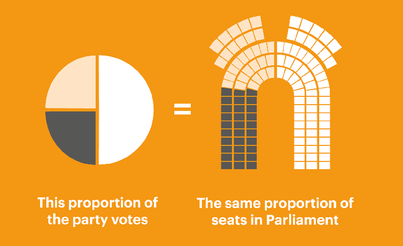

MMP in New Zealand
New Zealand adopted the Mixed Member Proportional (MMP) voting system in 1996, replacing the First Past the Post (FPTP) system. The decision to switch to MMP was made after two referendums in 1992 and 1993 where the public favored a change. MMP allows voters to have two votes: one for their preferred political party and another for their local electorate MP.
Since its adoption, MMP has resulted in a more proportional representation in the New Zealand Parliament, enabling smaller parties to gain representation. It has also encouraged coalition governments due to the nature of proportional representation.
The system has undergone reviews, with a notable one in 2012. Recommendations from this review included lowering the party vote threshold and removing the "coat-tailing" provision. While discussions have been ongoing, significant changes to the MMP system have yet to be implemented as of the last review.
